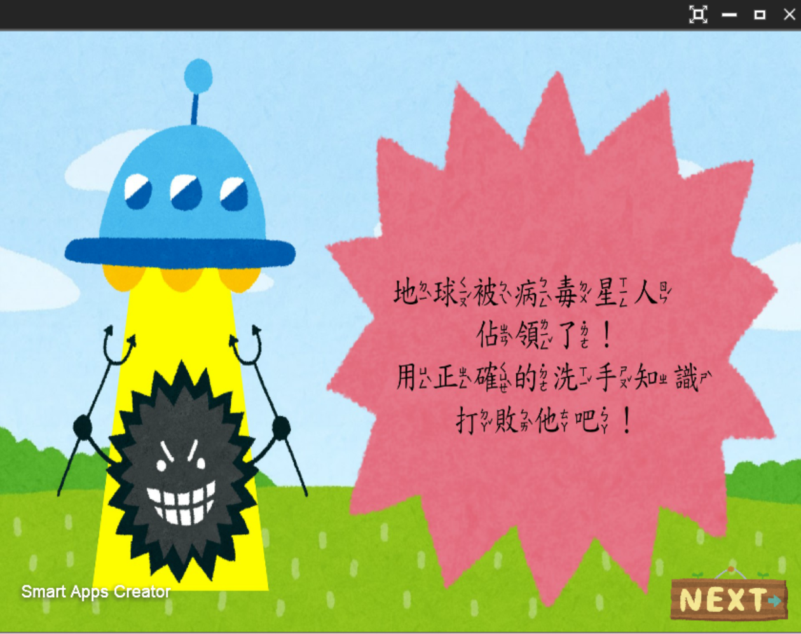
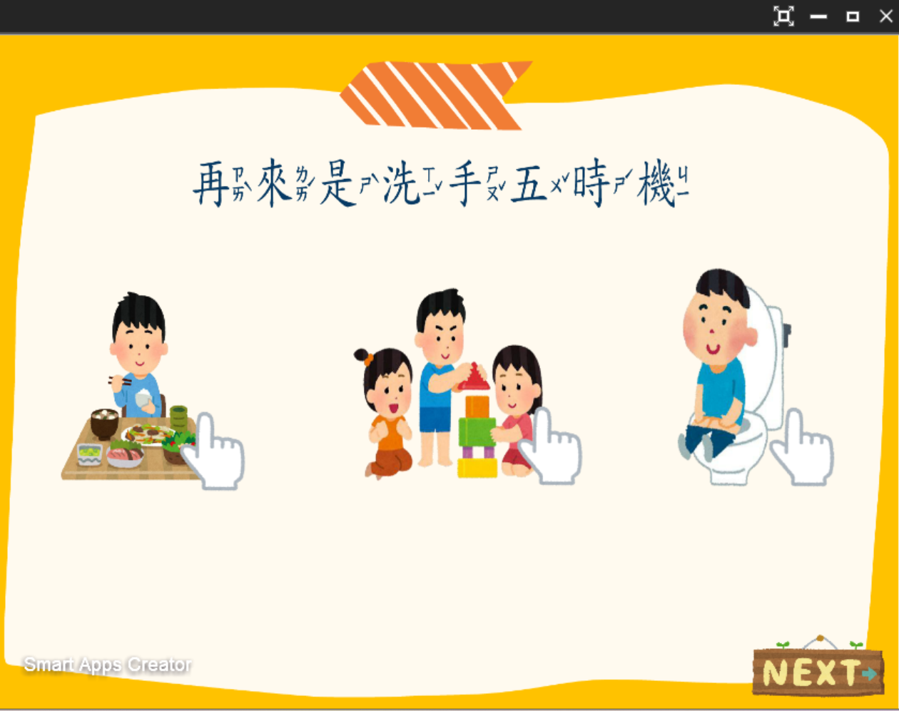
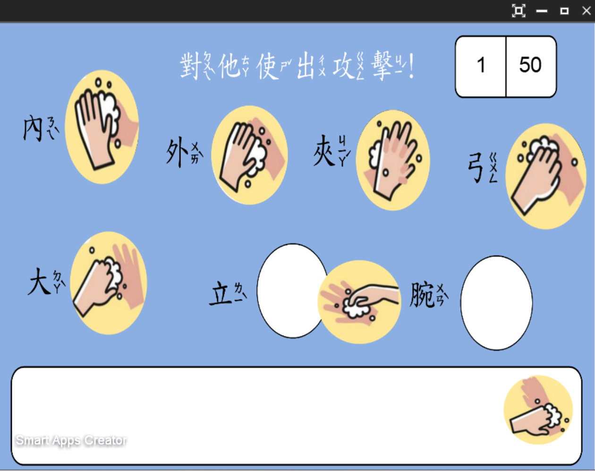
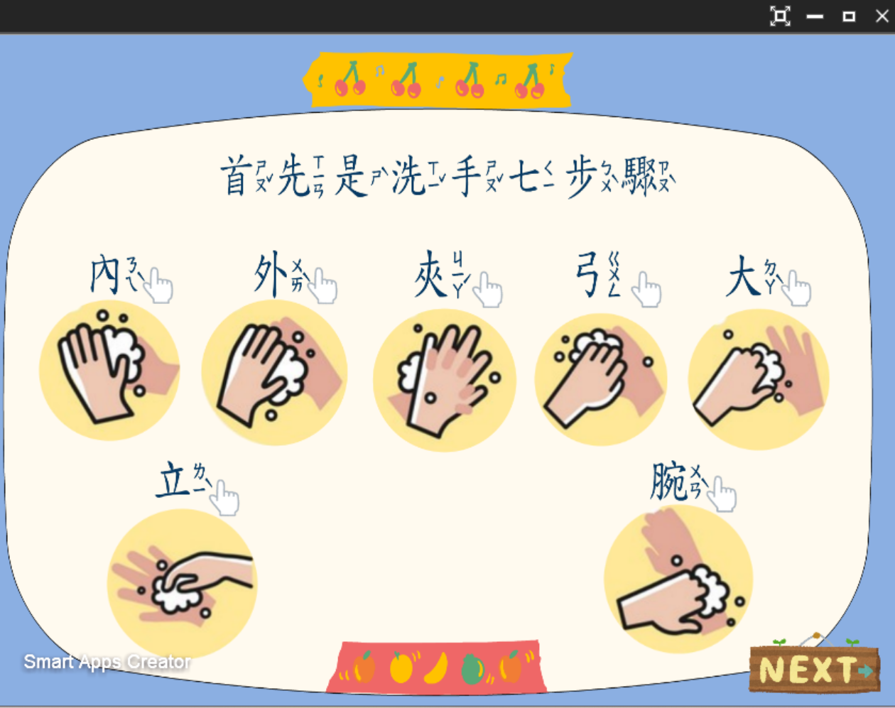

📖 作品簡介
本教材專門針對小學低年級學童量身設計，以生動活潑的「病毒星人入侵地球」故事為核心情境，帶領學童在趣味冒險中熟記衛教核心──「洗手七字訣（內外夾弓大立完）」與「洗手五時機」。
為了大幅提升低年級學童的專注度與互動意願，教材廣泛運用點擊與拖曳圖片、文字的互動操作機制；同時貼心導入帶有注音符號的字體呈現，有效降低學童的閱讀門檻，讓小朋友們能在自主操作的闖關過程中輕鬆理解並落實洗手健康習慣。
本教材專門針對小學低年級學童量身設計，以生動活潑的「病毒星人入侵地球」故事為核心情境，帶領學童在趣味冒險中熟記衛教核心──「洗手七字訣（內外夾弓大立完）」與「洗手五時機」。
為了大幅提升低年級學童的專注度與互動意願，教材廣泛運用點擊與拖曳圖片、文字的互動操作機制；同時貼心導入帶有注音符號的字體呈現，有效降低學童的閱讀門檻，讓小朋友們能在自主操作的闖關過程中輕鬆理解並落實洗手健康習慣。
下方為教材實際操作展示影片，展示從情境引導故事、洗手七步驟拖曳互動到測驗過關的流暢體驗：
本教材針對兒童認知特點量身打造，各項核心特色功能如下：

以趣味童趣的病毒星人角色建構情境冒險任務，將枯燥的衛教知識包裝為保衛地球的闖關動力，快速吸引學童投入。

將「內外夾弓大立完」與關鍵洗手時機轉化為直觀可愛的圖解卡片，幫助學童一步步建立標準且扎實的手部清潔觀念。

跳脫單向死記學習，透過拖曳文字、配對洗手順序圖卡等手腦並用的數位互動機制，加深動作記憶與學習參與度。

全教材文字皆配有注音符號輔助，貼心考量國小低年級的識字階段，讓學童無障礙自主閱讀並享受順暢學習歷程。